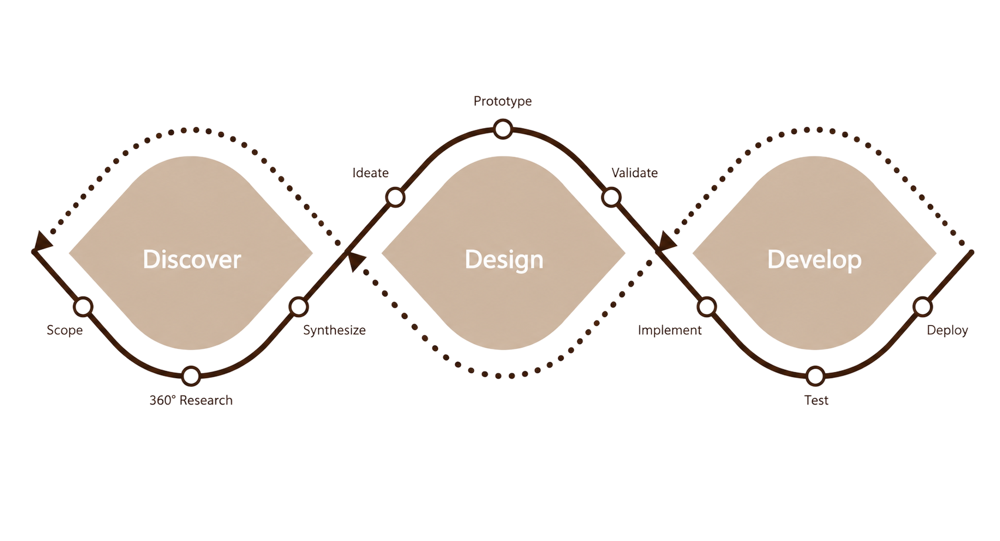
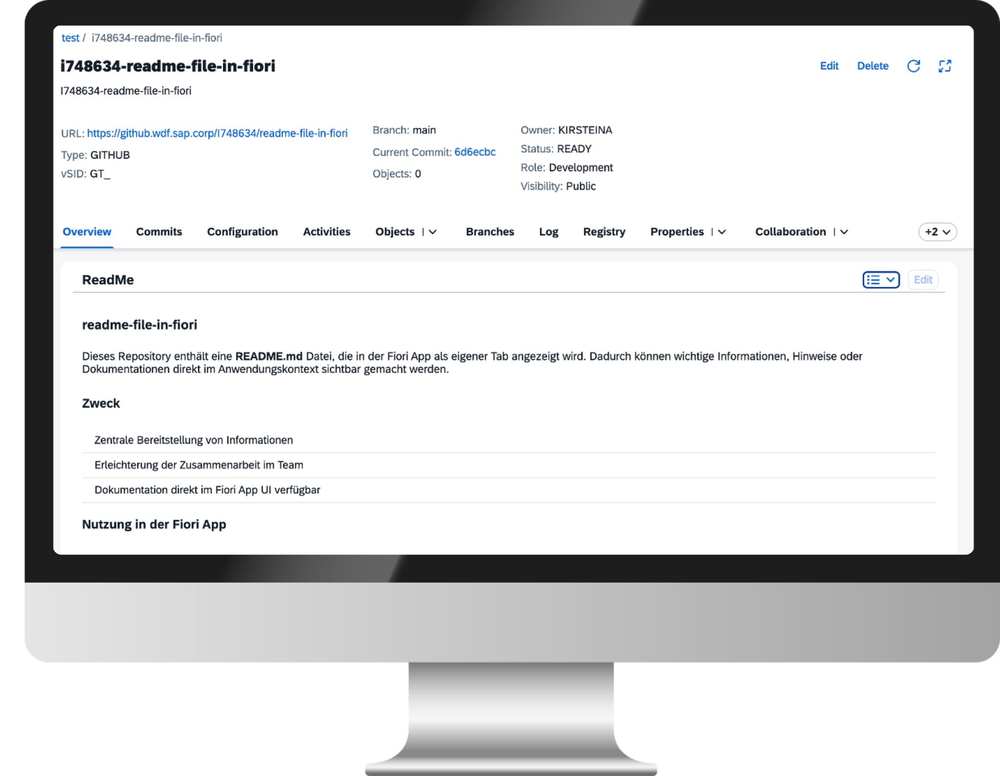

A Design Thinking project focused on improving the developer experience within gCTS.
From pain point to prototype — in one design sprint. Back to timelinegCTS (Git-enabled Change and Transport System) is SAP's Fiori app for managing code transports. To view a repository's README, developers had to leave gCTS and open GitHub — a recurring context switch that was especially painful during installation or when a repository was private or deleted.
My task: show the README directly in gCTS as an "Overview" tab. I followed the DLD process (Discovery, Design, Development) — starting with a pain-point interview, a user story and persona, and an analysis of how GitHub, GitLab, and Bitbucket handle README display.
Based on the findings, I planned and worked through the different stages of the DLD process, from defining the problem and exploring ideas to developing and refining the final concept.

I explored different approaches for improving the workflow and developed a solution that integrates a dedicated README tab directly into gCTS. The Markdown content is automatically converted into HTML and displayed seamlessly within the existing interface. The final concept reduces unnecessary context switches and provides developers with easier access to the information they need, creating a more seamless experience within gCTS.

This station challenged me to work through the full Design Thinking cycle on my own — from understanding a real developer pain point to designing and handing off a concrete solution. Along the way, I picked up new technical skills and learned what it means to take ownership of a project from start to finish.